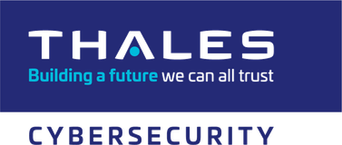

Our next events
Cybersecurity & Digital Trust Summit Series
The Bamberg Cybersecurity & Digital Trust Summit Series is our flagship international platform.
Our summits bring together senior cybersecurity, technology, risk, data and government leaders within strategic markets around the world for focused discussions on the most important challenges shaping cybersecurity and digital trust.
SummitsMany representatives from the industry trust us
Senior cybersecurity, technology and government leaders have joined our summits.
[Testimonio pendiente: el cliente debe enviarlo o autorizar sacarlo de sus redes sociales]
[Testimonio pendiente]
[Testimonio pendiente]
[Testimonio pendiente]
Partners who trust us

Strengthening Cybersecurity Through Collaboration
Cybersecurity cannot be addressed by the private sector or government independently.
Bamberg Security facilitates dialogue between government institutions, regulators, critical infrastructure operators and private-sector cybersecurity leaders to encourage greater collaboration around shared digital risks.
Our programs provide a neutral environment where stakeholders can discuss cybersecurity policy, regulation, national cyber resilience, critical infrastructure protection and emerging technological risks.
Explore opportunities